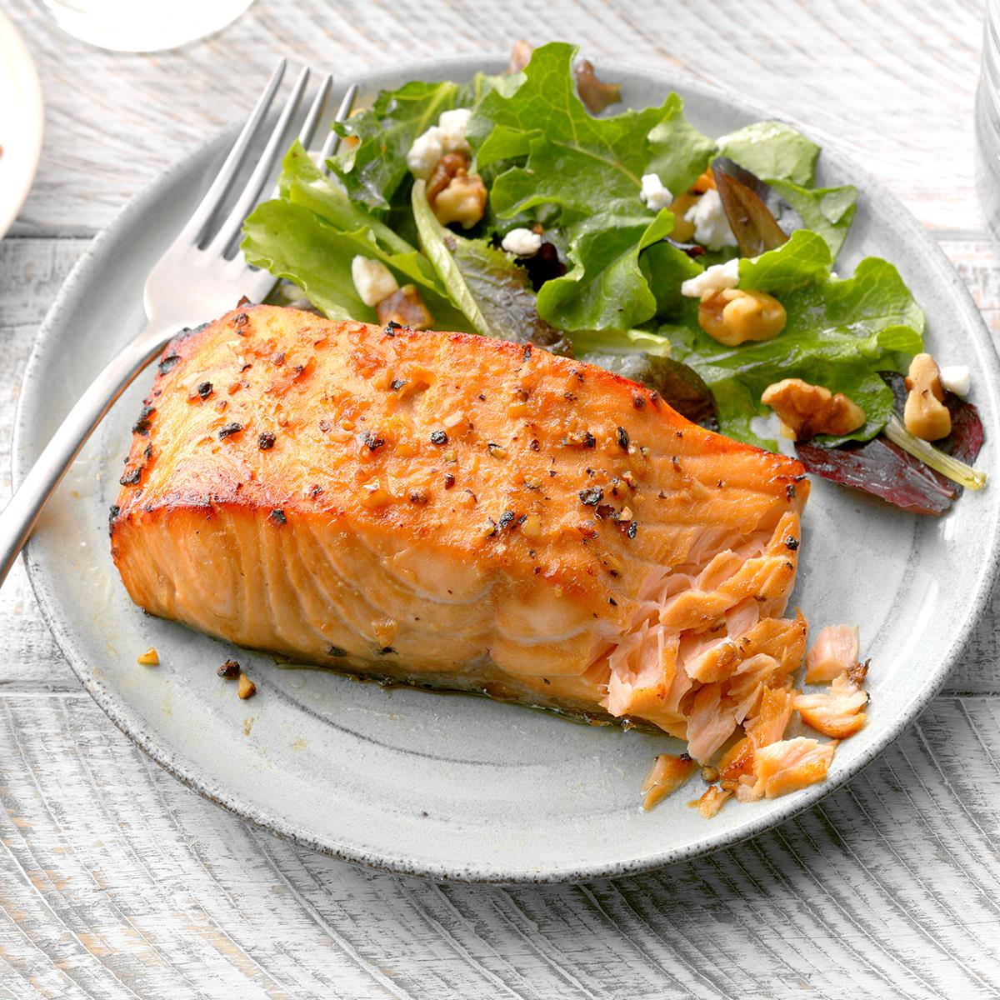

Pan seared salmon fillet

Description
Pan Seared Salmon with Garlic Lemon Butter Sauce is one of the tastiest, easiest recipes you’ll ever try! Tender salmon fillets are pan seared until perfectly golden brown then covered in a simple, vibrant and rich lemon butter sauce. A reader favorite!
Ingredients
- 1x salmon fillet
- 1x fresh lemon
- 1x chicken broth
- 1x garlic
- 1x block of butter
- 1x cup of honey
- 1x olive oil
- 1x parsley
Steps
- Let salmon rest at room temperature
- Make lemon butter sauce
- Sear salmon fillet. Flip after 2 minutes on each side.
- Put sauce on salmon fillet
- Enjoy!